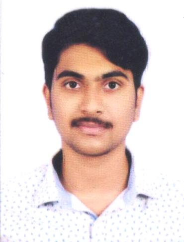

|  |
LANKA SAI SAMPATHSeeking a challenging and rewarding opportunity with an organisation which recognizes and utilizes my true potential while nurturing my analytical and technical skills in the field of IT. |
| Degree | College/School | Branch/Stream | Scores Obtained |
|---|---|---|---|
| B.Tech | Vignan's Institute of Information Technology(VIIT),Visakhapatnam | Mechanical Engineering | 7.82 CGPA |
| Intermediate | Sri Chaitanya Junior College,Visakhapatnam | MPC | 8.21 CGPA |
| 10th Class | Sri Chaitanya EM School,Visakhapatnam | General | 8.8 CGPA |
Jan 2021 - March 2021
March 2022 - June 2022
(Present)
Currently pursuing the Machine Learning course from an online Udemy platform in order to develop systems that apply learned data in contrast to general intelligence.
English, Telugu